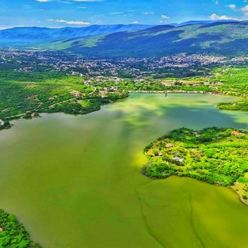

Jalpan de Serra
Historia
Jalpan de Serra, un municipio ubicado en la Sierra Gorda de Querétaro, tiene una historia rica y profunda, con raíces prehispánicas y un papel importante en la época colonial.
Época Prehispánica:
Antes de la llegada de los españoles, la región de Jalpan estaba habitada por grupos indígenas como
los pames y los jonaces. Los pames, que pertenecían al grupo étnico otomí, vivían en esta región
montañosa, donde desarrollaron una cultura ligada a la naturaleza. Su resistencia a la conquista y
la evangelización fue significativa, manteniéndose en gran medida independientes hasta el siglo
XVIII.
Fundación Colonial:
La fundación de Jalpan como tal está vinculada a las misiones franciscanas. En 1744, el fraile
franciscano Junípero Serra, quien luego sería famoso por fundar misiones en California, fue asignado
a evangelizar la Sierra Gorda. Fue en este contexto que se estableció la Misión de Santiago de
Jalpan, dedicada al apóstol Santiago, con el propósito de convertir a los indígenas al cristianismo
y pacificar la región.
La construcción de la misión fue un proceso importante en la historia de Jalpan. Los indígenas,
dirigidos por los franciscanos, participaron activamente en la edificación de la iglesia, cuyo
estilo barroco mestizo refleja la fusión de la cultura europea e indígena.
Desarrollo Colonial:
Con la fundación de la misión, Jalpan se consolidó como un centro religioso y cultural en la Sierra
Gorda. La misión de Santiago de Jalpan, junto con otras en la región, fue clave para la
evangelización y colonización de la zona. A lo largo del siglo XVIII, Jalpan y las otras misiones
sirvieron como una barrera entre las tierras controladas por los españoles y las zonas indígenas aún
no pacificadas.
Patrimonio Cultural:
Hoy en día, la Misión de Santiago de Jalpan es Patrimonio de la Humanidad, designado por la UNESCO
como parte del conjunto de misiones franciscanas de la Sierra Gorda. La historia de Jalpan sigue
viva en sus edificios coloniales, tradiciones culturales y el legado indígena que aún se siente en
la región.
Atractivos Principales
Misión de Jalpan
La Misión de Santiago de Jalpan es un conjunto arquitectónico mexicano ubicado en Jalpan de Serra, Querétaro. Está integrado por un convento y una iglesia, construidas en estilo churrigueresco por la orden Franciscana en el siglo XVIII. La Misión se encuentra en el centro de la ciudad de Jalpan y desde 2003 es considerada Patrimonio de la Humanidad por la Unesco como parte de las Misiones franciscanas de la Sierra Gorda de Querétaro.
Presa jalpan
La Presa de Jalpan se localiza en la parte central de la Reserva de la Biósfera Sierra Gorda, en el estado de Querétaro. El 2 de febrero de 2004 se designó como Humedal de Importancia Internacional. Desde su asignación como el sitio Ramsar número 1352, la presa fue reconocida como refugio de un número importante de aves migratorias, así como de especies residentes.
Museo historico de la sierra Gorda
Fue inaugurado el 9 de agosto de 1991 en el edificio construido sobre el presidio militar o fuerte, edificado en 1576 por órdenes del Virrey Martín Enríquez de Almanza y reconstruido a finales del mismo siglo por Luis Carbajal y de la Cueva. Su creación hizo realidad las aspiraciones de los estudiosos de la riqueza cultural de la Sierra Gorda y, de manera especial, de las comunidades mismas que habitan ese privilegiado territorio del noroeste queretano. El Museo Histórico ofrece una síntesis objetivada de los acontecimientos más significativos ocurridos en esa región queretana y zonas de los estados colindantes, desde la prehistoria hasta el siglo actual. Mediante el arte y las técnicas de la museografía moderna, a través de una rica variedad de grabados y objetos antiguos y contemporáneos, el museo ofrece un panorama de la acción transformadora de los diversos grupos humanos que han poblado la Sierra Gorda desde los tiempos más remotos hasta nuestro siglo, entre ellos el de los "Pames": pobladores más antiguos que han sobrevivido hasta nuestros días en algunas comunidades de Tancoyol y en el mestizaje de la población mayoritaria de la Sierra Gorda. La última sala, de carácter etnográfico, es un homenaje a esa sobrevivencia.

Cultura
La cultura jalpense es vibrante y llena de vida. Durante todo el año, el pueblo celebra diversas fiestas y eventos que reflejan sus ricas tradiciones. La Feria de Jalpan, celebrada en marzo, es un evento imperdible donde la música, la danza y la gastronomía local se combinan para crear una fiesta inolvidable. Los mercados locales están llenos de artesanías únicas, como textiles y cerámicas, que son el reflejo del talento y la creatividad de los artesanos de la región.
Gastronomía
Y hablando de gastronomía, no puedes dejar Jalpan de Serra sin probar sus delicias culinarias. Desde los tradicionales tacos de cecina hasta las enchiladas serranas, cada bocado es una explosión de sabor que te hará querer más. No olvides acompañar tus comidas con un refrescante agua de sabor o un mezcal artesanal de la región.